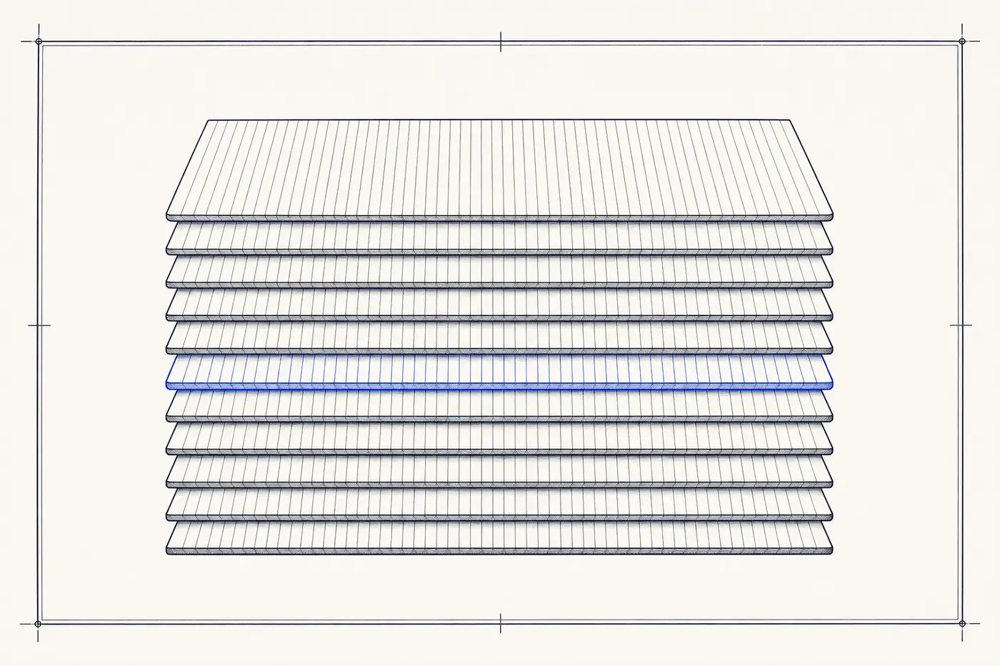

Content Marketing
Editorial engines for demand: 113 US content agencies and studios producing the articles, video, and resources that earn attention and compound into organic growth.
The wall
The content wall: publishing happens, compounding does not. A blog with three years of posts and no rankings, videos with two-digit view counts, a newsletter written when someone has time. Content produced without a strategy for who it serves and how it gets found is cost, not asset — and the difference is invisible until the traffic report.
What the discipline is
Content Marketing firms build editorial engines: strategy (what to cover, for whom, to what end), production (articles, video, podcasts, guides, tools), and distribution (search, social, email syndication). The discipline's premise is that consistently useful material attracts buyers more durably than interruption — and its craft is making "useful" specific enough to rank, get cited, and convert.
How vendors in this category work
Engagements run as monthly retainers scoped to a publishing cadence, or as project builds (a resource hub, a pillar-content library). Pricing tracks the seniority of the people writing: subject-matter-expert-driven content commands more than volume production, and the market increasingly splits along exactly that line as AI compresses the cost of the commodity tier.
The US content marketing services market at a glance
Questions buyers ask
Questions sourced from live Google "People Also Ask" data for this discipline (harvested August 2026); answers are The Wall's own.
What is content marketing in simple words?
Content marketing is attracting customers by publishing material they actually want — articles, videos, guides, podcasts, tools — instead of buying their attention with ads. The content answers real questions and builds trust, so when the reader becomes a buyer, the publisher is already on the shortlist.
What does content marketing look like when it works?
Recognizable versions: an authoritative blog that owns its category’s search demand, a resource library sales teams actually send to prospects, a newsletter the market forwards, a video series that compounds subscribers. The common trait is an asset that keeps producing attention after the invoice is paid.
How does a company start content marketing seriously?
Four decisions before any writing: who exactly the content serves, which questions and searches it will own, what format the team can sustain at quality, and how success gets measured beyond traffic. Firms in this category are typically hired to make those decisions with data and then run the production cadence.
What are the "three P’s" of content marketing?
Planning, production, and promotion — strategy before creation, creation at a sustainable cadence, and deliberate distribution afterward. Most failed content programs skipped the first or third P: they produced material without a plan for who it serves or a mechanism for it to be found.
Is content marketing still worth it in the AI era?
More than before, with a caveat: generic content is now free to produce and therefore worthless, while original expertise, data, and perspective are what search engines and AI answer surfaces reward with rankings and citations. The bar moved up; the channel did not close.